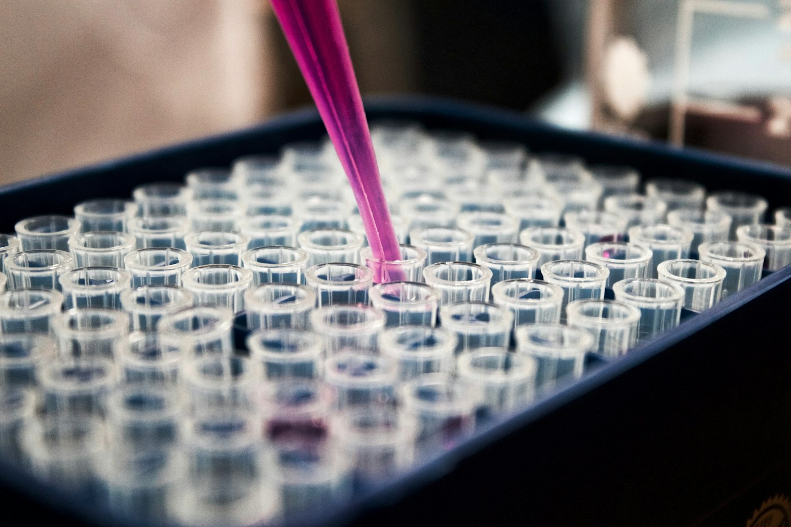
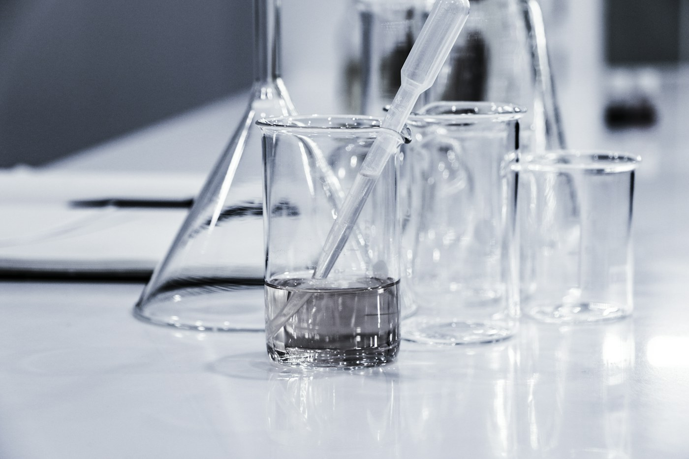
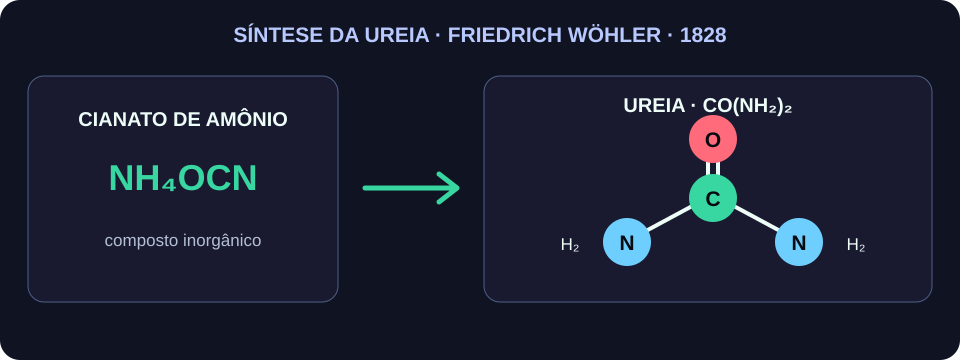
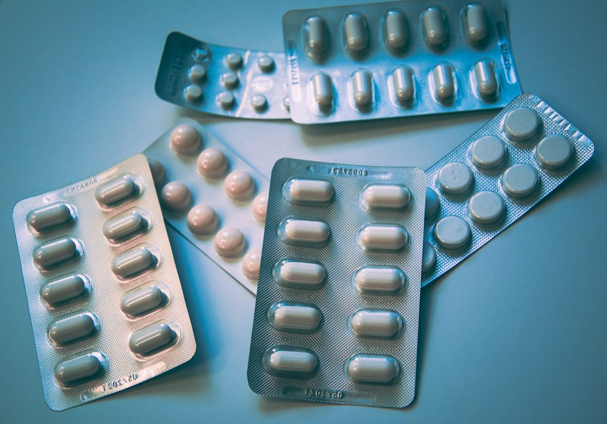

QUÍMICA
ORGÂNICA
Do carbono à construção do futuro
Uma jornada científica pelo carbono, pela vida, pela tecnologia e pelo futuro.

O CARBONO
POR QUE O CARBONO É TÃO IMPORTANTE?
Compostos orgânicos participam da produção de medicamentos e tratamentos.
Combustíveis e materiais energéticos têm origem em estruturas orgânicas e químicas.
Carboidratos, proteínas e lipídios são compostos orgânicos essenciais para a vida.
Materiais avançados e tecnologias dependem de moléculas, polímeros e estruturas orgânicas.
DE ONDE VEIO A QUÍMICA ORGÂNICA?


QUÍMICA ORGÂNICA E QUALIDADE DE VIDA
SELECIONE UMA ÁREA

SAÚDE
- Medicamentos
- Anestésicos
- Importância clínica em diagnóstico e tratamento
ALIMENTAÇÃO
- Carboidratos
- Lipídios
- Proteínas e compostos vitais para a nutrição
AGRICULTURA
- Defensivos agrícolas
- Fertilizantes
- Produção de alimentos e produtividade do campo
COTIDIANO
- Cosméticos
- Plásticos
- Produtos de limpeza e materiais de uso comum
PROTEÇÃO AMBIENTAL
COMO A QUÍMICA PODE AJUDAR A REDUZIR NOSSO IMPACTO?
Dependência de materiais e processos com maior impacto ambiental.
Desenvolvimento de alternativas renováveis e mais seguras.
Redução de resíduos, toxicidade e impacto ambiental.
Acúmulo de materiais sintéticos de difícil degradação.
Criação de materiais produzidos a partir de fontes renováveis.
Possibilidade de reduzir resíduos e melhorar o uso dos recursos.
Resíduos plásticos persistentes no ambiente.
Estudo de polímeros com estruturas mais degradáveis.
Menor permanência de resíduos em ciclos naturais.
Desperdício de materiais valiosos e aumento de resíduos.
Processos de separação, reaproveitamento e transformação.
Maior eficiência no uso dos recursos e menos descarte.
Produção industrial com elevado consumo de energia e geração de resíduos.
Processos mais seguros, eficientes e menos agressivos ao ambiente.
Soluções mais sustentáveis para a indústria e a sociedade.
O FUTURO É ORGÂNICO?
QUAL É O PROBLEMA?
Doenças que exigem tratamentos mais específicos e eficientes.
QUAL É O PAPEL DA QUÍMICA ORGÂNICA?
Desenvolver moléculas e compostos com ação terapêutica.
QUAIS SÃO OS BENEFÍCIOS?
Tratamentos mais eficazes e personalizados.
QUAL PODE SER O IMPACTO FUTURO?
Avanços em medicina preventiva, diagnóstica e terapêutica.
QUAL É O PROBLEMA?
Necessidade de materiais mais leves, resistentes e adaptáveis.
QUAL É O PAPEL DA QUÍMICA ORGÂNICA?
Projetar estruturas macromoleculares com propriedades específicas.
QUAIS SÃO OS BENEFÍCIOS?
Aplicações em eletrônicos, embalagens e materiais avançados.
QUAL PODE SER O IMPACTO FUTURO?
Materiais mais versáteis para diferentes setores.
QUAL É O PROBLEMA?
Necessidade de materiais compatíveis com tecidos e processos biológicos.
QUAL É O PAPEL DA QUÍMICA ORGÂNICA?
Criação de materiais com propriedades biocompatíveis e funcionais.
QUAIS SÃO OS BENEFÍCIOS?
Uso em próteses, engenharia de tecidos e soluções médicas.
QUAL PODE SER O IMPACTO FUTURO?
Interação mais segura entre materiais e organismos vivos.
QUAL É O PROBLEMA?
Demandas por materiais de alto desempenho em escala reduzida.
QUAL É O PAPEL DA QUÍMICA ORGÂNICA?
Manipular estruturas moleculares para propriedades específicas em nanoescala.
QUAIS SÃO OS BENEFÍCIOS?
Maior eficiência em sensores, energia e saúde.
QUAL PODE SER O IMPACTO FUTURO?
Novas aplicações em dispositivos e tecnologias de alto desempenho.
MISSÃO: REFLETIR
“Conhecer o carbono é entender uma parte fundamental das transformações que moldam nossa vida.”
O conhecimento da Química Orgânica contribui para o desenvolvimento de medicamentos, materiais, alimentos, tecnologias e soluções ambientais, mas também exige responsabilidade diante dos recursos naturais, dos resíduos e dos impactos ambientais.
MISSÃO QUASE CONCLUÍDA
DESAFIO FINAL
TESTE SEU CONHECIMENTO